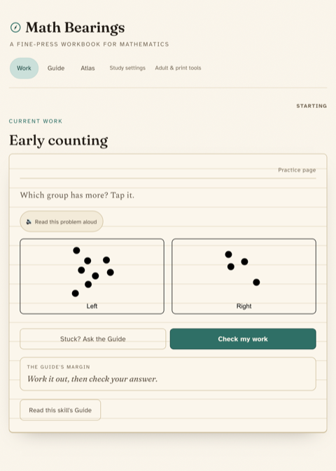

Keep the learning core pure
Domain logic is deterministic and fully unit-testable, with storage and rendering pushed to the edges. Seeded generators mean a worksheet, its answer key, and its printable twin all come from the same source.
Production case study
Math Bearings is a browser-based math practice app for ages 3 up. It grades the working rather than pattern-matching a final answer, gives hints that cannot leak the result, and marks a skill as held only while the learner keeps re-demonstrating it. This walkthrough covers the domain core, the grading model, offline delivery, and the gates that keep the privacy posture from drifting.

Most practice apps optimize for activity and infer learning from it. Math Bearings inverts the unit of progress: a skill counts only once the learner has produced the work for it, and then produced it again later without help.
Curriculum design, learning engine, scheduler, worksheet surfaces, offline delivery, print output, and deployment.
80 skill nodes across four bands, from subitizing to one-variable linear equations, with fifteen worksheet types including visual and tappable ones.
Privacy, offline behavior, and answer-safety are enforced by tests that fail closed, not by a policy page.
A silent adaptive pretest probes down each strand and settles on a starting point. Nobody self-reports a grade level, and the probe results are kept separate from the mastery record.
The scheduler interleaves strands, respects prerequisite structure, and prefers continuing an active frontier over moving the learner somewhere new mid-thread.
Carries, partial products, number-line jumps, tape diagrams, and the learner's own chunking are all graded as structured work. Hints are Socratic and structurally unable to contain the result.
Mastery decays on a schedule, so the competence map reflects what a learner can do now rather than what they once did. Regaining a skill means re-demonstrating it cold.
Decay feeds back into Serve rather than ending the sequence. A skill that lapses re-enters the queue on its own, which is why the competence map describes what a learner can do today instead of what they once finished.
Math Bearings is a TypeScript monorepo. Curriculum, scheduling, grading, and mastery live in a side-effect-free core that knows nothing about storage, rendering, or platform. Persistence, UI, and device concerns sit behind ports at the edges.
That boundary is what let a React Native portability tracer reuse the production session assembly unchanged instead of reimplementing it. The tracer covers one node and exists to prove the core travels, not as a shipped mobile product.
No accounts, no analytics, and no network call carries learner data. Every learner record stays in device storage, and the tests fail closed if a request would leave the origin with it.
A browser journey goes offline and reopens every lazily loaded surface at 320px against the production origin, so the service worker and precache manifest are verified rather than assumed.
Production deploys run from CI on the default branch, rebuild the artifact rather than trusting one, re-confirm the verified commit is still current, and are armed by an explicit kill switch. No manual deploy to production has been run.
Domain logic is deterministic and fully unit-testable, with storage and rendering pushed to the edges. Seeded generators mean a worksheet, its answer key, and its printable twin all come from the same source.
A guard that still passes after you delete the code it protects is decoration. Every gate here is checked by breaking the thing it guards, and one command runs types, lint, unit tests, browser journeys against the built bundle, and bundle budgets.
Education-affecting changes carry a machine-readable receipt describing what learner data they touch. The gate derives the actual data flow from the diff and fails when the two disagree, so the invariant is mechanically enforced rather than remembered.
The visible surface is a quiet React app. Behind it is the part that decides whether a learning product is honest: a domain model with a defensible unit of progress, grading that reads structured work, hints that cannot cheat, and privacy properties that are tested rather than promised.
One caveat belongs on this page as much as in the repository. The software and its behavior are verified; its effect on learners is not. There is no human-subject evidence here, so nothing on this page claims improved outcomes, retention, or confidence. The project holds its own bar for that claim, and it has not been met yet.